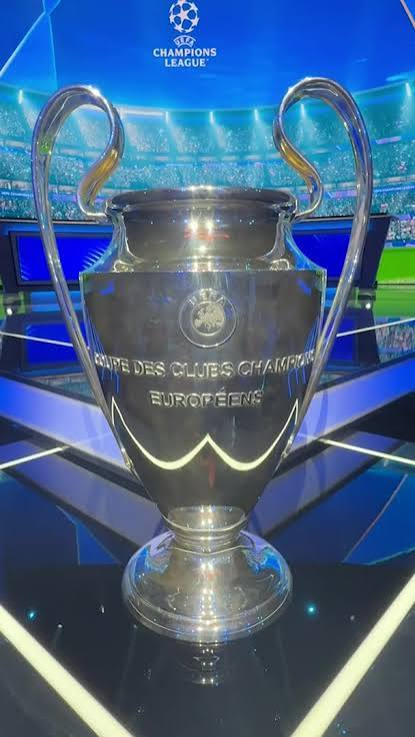
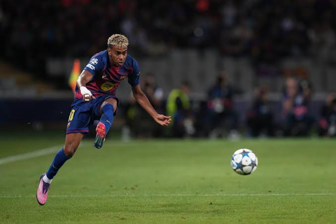
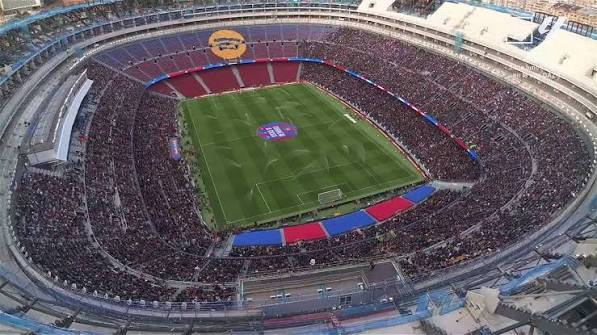

Historia
El Barça nació el 29 de noviembre de 1899 en Barcelona, de la mano del suizo Joan Gamper y un grupo de aficionados. Con los años se convirtió en un símbolo de la identidad catalana, y hoy pertenece a sus socios.
- 1899 Fundación del club.
- 1957 Se inaugura el Camp Nou.
- 1992 Primera Copa de Europa, en Wembley, con el Dream Team de Cruyff.
- 2009 Seis títulos en un año con Guardiola.
- 2015 Triplete con Luis Enrique.
- 2025 Liga, Copa y Supercopa con Hansi Flick.
- 2026 Supercopa y Liga número 29.
Títulos principales
Datos hasta la temporada 2025-26. Cambian cada año.
29La Liga
31Copa del Rey
5Champions League
16Supercopa de España
3Mundial de Clubes
Leyendas
Lionel Messi
2004–2021Máximo goleador del club, con 672 goles en 778 partidos.
Johan Cruyff
Jugador y entrenadorCreó el Dream Team y marcó el estilo del club.
Xavi e Iniesta
Centro del campoEl corazón del Barça más laureado de la historia reciente.
Ronaldinho
2003–2008Líder de la Champions de 2006.
Galería



Vídeos y enlaces
Los vídeos se abren en YouTube.